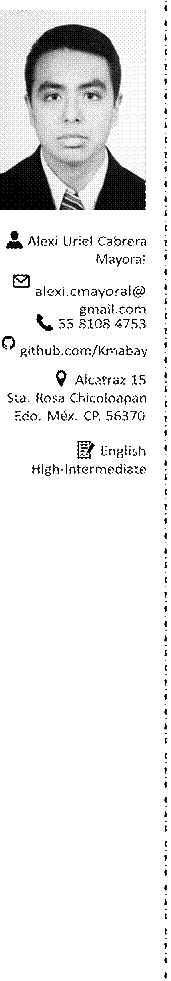

Alexi Cabrera
Sobre mí Ingeniero en computación. Apasionado por la programación, matemáticas, NLP, UX/UI, data science y bases de datos. Busco la oportunidad de contribuir a proyectos de vanguardia que involucren temas de mi interés e incrementar mis habilidades y conocimientos.
|
FI UNAM Licenciatura UnADM Licenciatura UNAM Técnico SEP Técnico Experiencia Laboral |
Ing. en Computación Matemáticas Mantenimiento TI Diseño gráfico |
2016 - 2024 (tentativo) 2017 - 2026 (tentativo) 2014 - 2015 2013 - 2014 |
• HAPedregal-Sistemasdeinformación 05/2023 - 02/2024
Configuré equipos de red y cómputo. Dí soporte y solución a incidentes y solicitudes de diferentes áreas del hospital y proveedores. Propusé soluciones durante la migración de sistema (S/4Hana). Me involucré en el desarrollo del cableado estructurado de una nueva torre hospitalaria.
• Centro académico Elyon - Docente 02/2022 - 01/2023 Proporcioné enseñanza y apoyo en matemáticas, física e informática a personas de distintas edades y en distintos niveles de conocimiento.
• Instituto de Compuinglés de Oriente - Docente 07 - 10/2019 Practiqué la docencia en diseño gráfico y computación (Software de Microsoft y Adobe). Cumplí con las certificaciones requeridas por el instituto.
• Ingenia-Técnico 04/2014 - 04/2016 Realicé mantenimiento y reparación de equipos personales (PC’s, laptops, tablets, celulares). Aprendí y realicé cotizaciones y venta de equipo de cómputo dependiendo las necesidades del cliente.
Proyectos
• Papiit-PapimeyConacyt-Desarrollador 12/2022
WebApp Paráfrasis: Proyecto desarrollado en Flask, que calcula similitud semántica con diferentes algoritmos y LLM’s.
• Mozilla, UNAM - Miembro de Amoxcalli 05/2022
Amoxcalli: Biblioteca digital colaborativa de audio, con modelos preentrenados recolectamos datos del habla (español y lenguas indígenas de México). Primer lugar Hackaton sobre tecnologías del habla.
• Papiit-Papime - Participante 02 - 08/2022
PARMEX: Involucrado en la implementación de herramientas de NLP y estudio de sus resultados.
Cursos y certificados
• SEP ICO Texcoco(2014): Bases de datos con Microsoft Access
• FI UNAM Proteco (2017): Desarrollo web avanzado
• FI UNAM Copadi (2018): Métodos de demostración matemática
• CISCO (2020): PCAP (Programming Essentials in Python)
• CISCO (2020): Introducción a la ciberseguridad
• freeCodeCamp (2021): Python sk-learn Tutorial – ML Crash Course
• CodeWarriors UDEMY (2021): NLP Course for Beginner
• SuperDataScience team UDEMY (2021): Natural Language Processing (NLP) with BERT
• Vinay Kummar UDEMY (2021): Node, Express, React JS MySQL full stack web development
• Google Cloud Coursera (2022): Google Cloud Fundamentals
Lenguajes y software de propósito general
• Python: librerías NLP (Gensim, Spacy, scikit-learn, PyTorch, TensorFlow).
• Lenguajes enfocados a la ciencia de datos: Python (matplotlib), R.
• Programación en general: C, C++, Java.
Herramientas de infraestructura
• Active Directory (UserAdmin y configuración de e-mail).
• Google cloud services (Contribución al deploy de una IA generativa basada en dark data, conocimiento básico de Looker Studio)
• SAP S/4Hana (ECH, Fiori, conocimiento básico de ABAP).
• Herramientas de Quality assurance (Agile, casos de uso, Postman, SQL).
• Linux, contenedores, Podman, Kubernetes
• Integración de microprocesadores (Raspberry Pi) y microcontroladores (Arduino), con protocolos de comunicación (UART, I2C, TCP/IP) y aplicaciones de ROS.
• Conocimiento de OpenGL a través de GLFW (shaders, primitivas, animación e iluminación).
• Uso de LATEXdesde reportes académicos hasta tesis.
• Programación básica de micro PIC16F877 y Procesador MC88110.
Habilidades duras y blandas
• Solución de problemas
• Habilidad analítica
• Ojo clínico
• Comunicación y habilidades de trabajo en equipo
Temas abordados
• Fundamentos de Deep learning
• Algoritmos de Machine learning
• Fundamentos de QA
• Principios de ingeniería de software
• Entendimiento de arquitecturas de CPU, GPU y FPGA